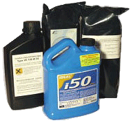

|  |
|
Фотополимер Из одного литра фотополимера можно изготовить 150-200 стандартных печатей. Упаковка - полиэтиленовые канистры ёмкостью 1 литр, 10 литров, 30 литров. |
Жидкий Фотополимер |
1 кг |
от 10 кг |
Фотополимер "Flexomatic", Италия |
750 руб/кг |
630 руб/кг |
Фотополимер "Verbatim", Англия |
770 руб/кг |
680 руб/кг |
Фотополимер "Дихром", Россия |
670 руб/кг |
500 руб/кг |
Фотополимер "Дихром Люкс", Россия |
750 руб/кг |
600 руб/кг |
Фотополимер "Asahi", Япония |
1050 руб/кг |
900 руб/кг |
Фотополимер "IDEAL i40", США |
980 руб/кг |
7500 за 9 кг |
Фотополимер "IDEAL i50", США |
940 руб/кг |
7100 за 9 кг |
Твердый Фотополимер на металлической основе, Япония, лист А4 |
Толщина 1 мм |
620 рублей |
Толщина 1,4 мм |
900 рублей |
 Фотополимер «Flexomatic» пр-ва Италии. Твердость 55 по Шору. Один из лучших фотополимеров по всем показателям, имеет наименьшую, по сравнению с остальными полимерами, остаточную адгезию (липкость), высокую разрешающую способность, стабильное время засветки. Фотополимер «Flexomatic» пр-ва Италии. Твердость 55 по Шору. Один из лучших фотополимеров по всем показателям, имеет наименьшую, по сравнению с остальными полимерами, остаточную адгезию (липкость), высокую разрешающую способность, стабильное время засветки.
Фотополимер «Verbatim» пр-ва Англии. Твердость 50.
Фотополимер «Дихром» пр-ва России. Твёрдость 55, наиболее высокая, по сравнению с другими полимерами разрешающая способность – хорошо получаются мелкие элементы. Линейные характеристики засветки. Отлично промывается.
Фотополимер «Дихром Люкс» пр-ва России. Твёрдость 55. Аналог полимера «Дихром», приближенный по характеристикам к импортным производителям: более очищенный, менее резкий запах.
Фотополимер «Asahi» пр-ва Японии. Твёрдость 55. Очень хорошие физико-технические показатели, достаточно прочен на разрыв, хорошая текучесть, более устойчив к спиртосодержащим краскам.
Фотополимер «IDEAL i 40» пр-ва США. Твёрдость 40. Слаб на разрыв, ограничения по разрешающей способности, очень хорошо промывается.
Фотополимер «IDEAL i 50» пр-ва США. Твёрдость 50.
|